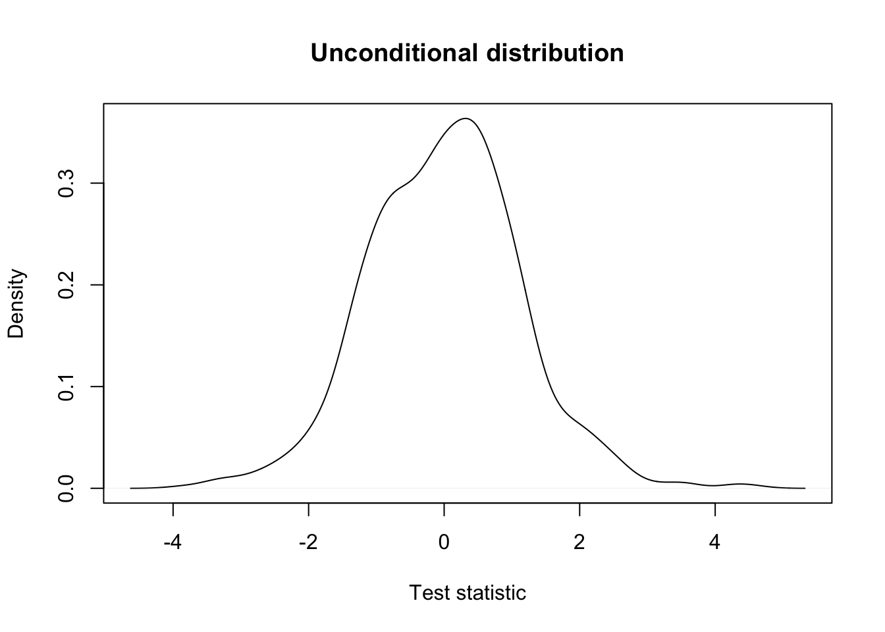
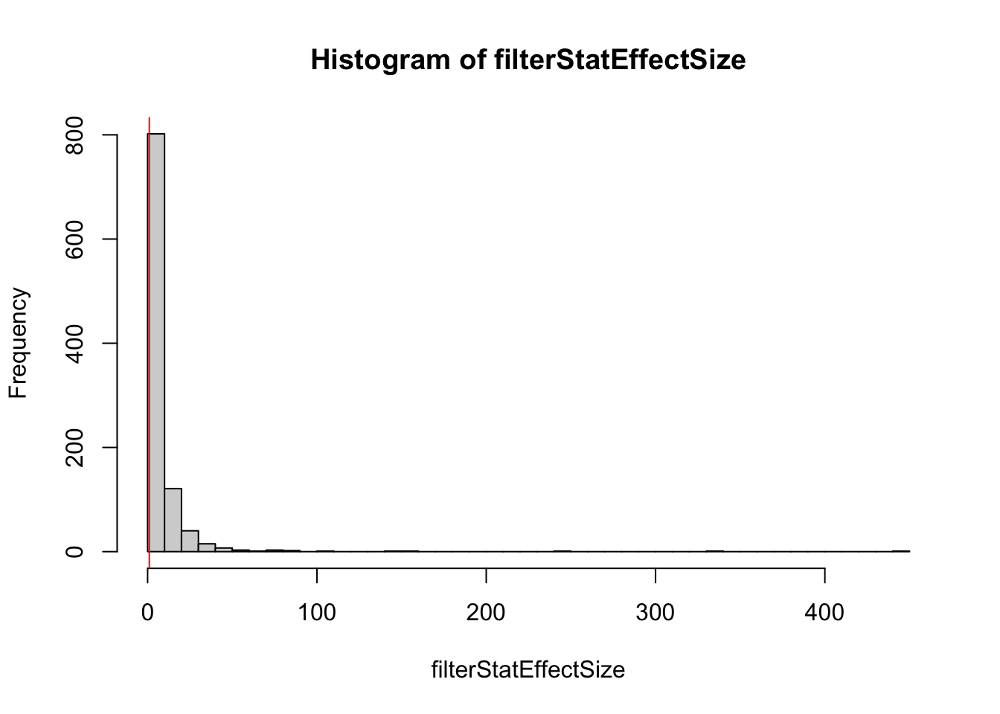
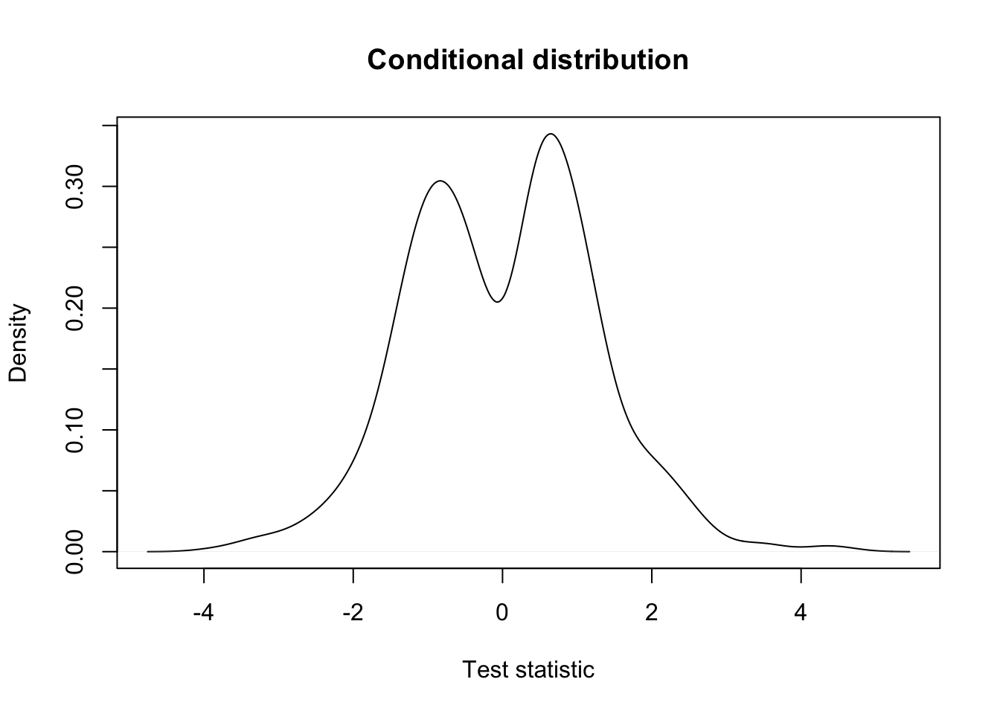
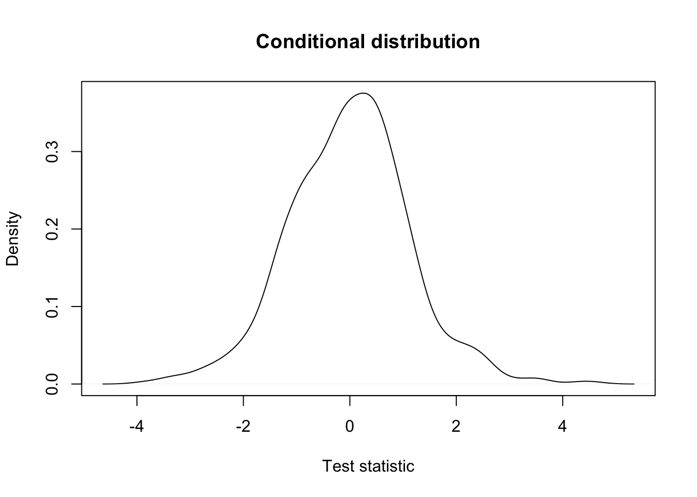

Independent filtering, where genes/transcripts/proteins are filtered out prior to statistical analysis, is a common practice in ‘omics experiments. Typically, lowly expressed features are filtered out, and one can argue that these features’ expression is too low to be deemed biologically relevant. In addition, low-count features are also associated with a low statistical power for differential expression (remember relative uncertainty of counts, and edgeR’s BCV plot), and will increase the number of tests performed, and therefore lead to a more severe multiple testing correction.
Figure 1 from Bourgon et al. (2010).
Independent filtering has been formalized by Bourgon et al. (2010), and the concept can be summarized as follows.
Figure 2 from Bourgon et al. (2010).
Let’s try a couple of examples to get some intuition using simulated data.
suppressPackageStartupMessages(library(DESeq2))
set.seed(24)
dds <- DESeq2::makeExampleDESeqDataSet()
simCounts <- counts(dds)
group <- dds$conditionfilterStatEffectSize <- abs(rowMeans(simCounts[,group == "A"]) - rowMeans(simCounts[,group == "B"]))
testStat <- genefilter::rowttests(simCounts, group)
## unconditional distribution
plot(density(testStat$statistic, na.rm=TRUE),
xlab = "Test statistic",
main = "Unconditional distribution")
## [1] 0.792
keepEffectSize <- filterStatEffectSize > 1
plot(density(testStat$statistic[keepEffectSize], na.rm=TRUE),
xlab = "Test statistic",
main = "Conditional distribution")
filterStatGlobalMean <- rowMeans(simCounts)
mean(filterStatGlobalMean > 5) # we remove a similar fraction## [1] 0.771keepGlobalMean <- filterStatGlobalMean > 5
## unconditional distribution
plot(density(testStat$statistic, na.rm=TRUE),
xlab = "Test statistic",
main = "Unconditional distribution")## conditional distribution: the same.
plot(density(testStat$statistic[keepGlobalMean], na.rm=TRUE),
xlab = "Test statistic",
main = "Conditional distribution")
Suppose we are working with the following experimental design on colon cancer. Studying the effect of a drug on gene expression, researchers gather RNA-seq data from four colon cancer patients and four healthy individuals. For each individual, they obtain RNA-seq data from a blood sample before as well as two weeks after taking a daily dose of the drug. The research question relates to differential expression after vs. before taking the drug, in particular whether this is different for the diseased versus healthy group (i.e., the interaction between time (before/after taking the drug) and disease status (healthy/colon cancer)).
In terms of the model matrix, we could imagine a design such as ~ patient + disease*time, where
disease is a binary indicator referring to colon cancer versus control sample.time defines if the sample is taken before or after taking the drug.patient defines the individual donor the sample comes from.The research question could then amount to testing the disease * time interaction.
Let’s try this, by simulating random data for one gene.
set.seed(2)
patient <- factor(rep(letters[1:8], each=2)) # 2 samples per patient
disease <- factor(c(rep("healthy",8), rep("cancer",8)), levels=c("healthy", "cancer")) # first four are healthy, next four are alcoholic
time <- factor(rep(c("before", "after"), 8), levels=c("before", "after")) # one before and one after sample for each
table(patient, disease, time)## , , time = before
##
## disease
## patient healthy cancer
## a 1 0
## b 1 0
## c 1 0
## d 1 0
## e 0 1
## f 0 1
## g 0 1
## h 0 1
##
## , , time = after
##
## disease
## patient healthy cancer
## a 1 0
## b 1 0
## c 1 0
## d 1 0
## e 0 1
## f 0 1
## g 0 1
## h 0 1## simulate data for one gene
n <- 16
y <- rpois(n = n, lambda = 50)
## fit a Poisson model
m <- glm(y ~ patient + disease*time,
family = "poisson")
summary(m)##
## Call:
## glm(formula = y ~ patient + disease * time, family = "poisson")
##
## Deviance Residuals:
## Min 1Q Median 3Q Max
## -1.52772 -0.43544 0.00013 0.44162 1.34650
##
## Coefficients: (1 not defined because of singularities)
## Estimate Std. Error z value Pr(>|z|)
## (Intercept) 3.76900 0.11916 31.631 <2e-16 ***
## patientb 0.06744 0.14999 0.450 0.6530
## patientc 0.06744 0.14999 0.450 0.6530
## patientd 0.27304 0.14310 1.908 0.0564 .
## patiente 0.16449 0.16224 1.014 0.3107
## patientf 0.02565 0.16644 0.154 0.8775
## patientg -0.01784 0.16785 -0.106 0.9154
## patienth 0.05706 0.16544 0.345 0.7302
## diseasecancer NA NA NA NA
## timeafter -0.01567 0.10220 -0.153 0.8782
## diseasecancer:timeafter 0.12374 0.14407 0.859 0.3904
## ---
## Signif. codes: 0 '***' 0.001 '**' 0.01 '*' 0.05 '.' 0.1 ' ' 1
##
## (Dispersion parameter for poisson family taken to be 1)
##
## Null deviance: 16.1200 on 15 degrees of freedom
## Residual deviance: 8.8417 on 6 degrees of freedom
## AIC: 120.16
##
## Number of Fisher Scoring iterations: 4We find that one of the coefficients is NA! This is obviously not because we’re dealing with NA values in the data as we’ve just simulated the response variable. What’s going on?
One of the parameters, in this case the parameter distinguishing cancer from healthy patients cannot be estimated as it is a linear combination of other parameters. In our case, estimating the diseased effect would use information that is already used to estimate the patient-level intercepts. In other words, once you know the patient, you immediately also know the disease status, so estimating the diseased vs healthy effect on top of the patient effect provides no additional information if we have already estimated the patient-level effects. This concept is called aliasing, and is a common technical issue in ’omics experiments with complex experimental designs.
While to understand the origin of the aliasing it is crucial to understand the relationship between the variables in the experimental design, we can also investigate it in detail using the alias function, to give us an idea.
## Model :
## y ~ patient + disease * time
##
## Complete :
## (Intercept) patientb patientc patientd patiente patientf patientg
## diseasecancer 0 0 0 0 1 1 1
## patienth timeafter diseasecancer:timeafter
## diseasecancer 1 0 0We see that the effect diseasecancer is a linear combination of the patient-specific effects of the cancer patients. This makes sense!
For clarity, let’s reproduce this using our design matrix.
X <- model.matrix(~ patient + disease*time) # this is the design used in glm()
## these are indeed identical.
X[,"diseasecancer"]## 1 2 3 4 5 6 7 8 9 10 11 12 13 14 15 16
## 0 0 0 0 0 0 0 0 1 1 1 1 1 1 1 1## 1 2 3 4 5 6 7 8 9 10 11 12 13 14 15 16
## 0 0 0 0 0 0 0 0 1 1 1 1 1 1 1 1Since one of our parameters is a linear combination of other parameters, it cannot be estimated simultaneously with the other parameters. In this case, we can actually drop the disease main effect from the model, since we know that it is already included in the patient effect.
We will have to carefully construct our design matrix in order to account for all important sources of variation while still allowing us to answer the research question of interest. The aliasing exploration above has made it clear we may drop the disease main effect, so let’s start by constructing this design matrix.
X <- model.matrix(~ patient + time + disease:time)
m2 <- glm(y ~ -1 + X,
family = "poisson")
summary(m2)##
## Call:
## glm(formula = y ~ -1 + X, family = "poisson")
##
## Deviance Residuals:
## Min 1Q Median 3Q Max
## -1.52772 -0.43544 0.00013 0.44162 1.34650
##
## Coefficients: (1 not defined because of singularities)
## Estimate Std. Error z value Pr(>|z|)
## X(Intercept) 3.76900 0.11916 31.631 <2e-16 ***
## Xpatientb 0.06744 0.14999 0.450 0.6530
## Xpatientc 0.06744 0.14999 0.450 0.6530
## Xpatientd 0.27304 0.14310 1.908 0.0564 .
## Xpatiente 0.28823 0.16077 1.793 0.0730 .
## Xpatientf 0.14939 0.16500 0.905 0.3653
## Xpatientg 0.10590 0.16643 0.636 0.5246
## Xpatienth 0.18081 0.16400 1.102 0.2703
## Xtimeafter -0.01567 0.10220 -0.153 0.8782
## Xtimebefore:diseasecancer -0.12374 0.14407 -0.859 0.3904
## Xtimeafter:diseasecancer NA NA NA NA
## ---
## Signif. codes: 0 '***' 0.001 '**' 0.01 '*' 0.05 '.' 0.1 ' ' 1
##
## (Dispersion parameter for poisson family taken to be 1)
##
## Null deviance: 4489.2752 on 16 degrees of freedom
## Residual deviance: 8.8417 on 6 degrees of freedom
## AIC: 120.16
##
## Number of Fisher Scoring iterations: 4## Model :
## y ~ -1 + X
##
## Complete :
## X(Intercept) Xpatientb Xpatientc Xpatientd Xpatiente
## Xtimeafter:diseasecancer 0 0 0 0 1
## Xpatientf Xpatientg Xpatienth Xtimeafter
## Xtimeafter:diseasecancer 1 1 1 0
## Xtimebefore:diseasecancer
## Xtimeafter:diseasecancer -1We are still confronted with aliasing as the model matrix contains an interaction effect timebefore:diseasecancer as well as timeafter:diseasecancer, while only the latter is relevant. Indeed, we know that we can derive the timebefore:diseasecancer effect by averaging the patient effects of the cancer patients.
X <- X[,!colnames(X) %in% "timebefore:diseasecancer"]
## fit a Poisson model
m2 <- glm(y ~ -1 + X,
family = "poisson")
summary(m2)##
## Call:
## glm(formula = y ~ -1 + X, family = "poisson")
##
## Deviance Residuals:
## Min 1Q Median 3Q Max
## -1.52772 -0.43544 0.00013 0.44162 1.34650
##
## Coefficients:
## Estimate Std. Error z value Pr(>|z|)
## X(Intercept) 3.76900 0.11916 31.631 <2e-16 ***
## Xpatientb 0.06744 0.14999 0.450 0.6530
## Xpatientc 0.06744 0.14999 0.450 0.6530
## Xpatientd 0.27304 0.14310 1.908 0.0564 .
## Xpatiente 0.16449 0.16224 1.014 0.3107
## Xpatientf 0.02565 0.16644 0.154 0.8775
## Xpatientg -0.01784 0.16785 -0.106 0.9154
## Xpatienth 0.05706 0.16544 0.345 0.7302
## Xtimeafter -0.01567 0.10220 -0.153 0.8782
## Xtimeafter:diseasecancer 0.12374 0.14407 0.859 0.3904
## ---
## Signif. codes: 0 '***' 0.001 '**' 0.01 '*' 0.05 '.' 0.1 ' ' 1
##
## (Dispersion parameter for poisson family taken to be 1)
##
## Null deviance: 4489.2752 on 16 degrees of freedom
## Residual deviance: 8.8417 on 6 degrees of freedom
## AIC: 120.16
##
## Number of Fisher Scoring iterations: 4We see that all coefficients can now be estimated. The timeafter effect may be interpreted as the time effect for healthy patients, while the timeafter:diseasecancer effect may be interpreted as the difference in the time effect for cancer patients, with the time effect for healthy patients, i.e., it is the relevant interaction effect we are interested in.
Question. Taking this further, suppose that we can safely assume that there is no interaction effect between disease status and time. How would you now test for differential expression between healthy and cancer patients at the first timepoint? Specify the experimental design and contrast used.
Assuming no interaction, we can specify the design as follows:
## (Intercept) patientb patientc patientd patiente patientf patientg patienth
## 1 1 0 0 0 0 0 0 0
## 2 1 0 0 0 0 0 0 0
## 3 1 1 0 0 0 0 0 0
## 4 1 1 0 0 0 0 0 0
## 5 1 0 1 0 0 0 0 0
## 6 1 0 1 0 0 0 0 0
## timeafter
## 1 0
## 2 1
## 3 0
## 4 1
## 5 0
## 6 1limma is a powerful linear model based framework for modeling microarray gene expression data and inferring differential expression results, and has been introduced in the proteomics module of this course. With the inception of RNA-seq, the limma developers got creative and extended their framework to also model count data, hence creating limma-voom.
In the proteomics module, we have previously introduced the powerful linear model based framework limma, and how it uses an empirical Bayes strategy to borrow information across proteins to derive a posterior variance estimate. In its default implementation, limma cannot be used to model count data, as it can not account for their mean-variance relationship. The developers, however, came up with a creative approach to use the limma framework to model coutn data.
edgeR and DESeq2 automatically account for the mean-variance relationship of the data, given that the observed mean-variance relationship is close to the one assumed by the distribution. However, they are also more complex, both computationally as well as statistically and conceptually.Figure 1 from Law et al. (2014).
Figure 1 from Law et al. (2014).
Add limma-voom analysis of RNA-seq data